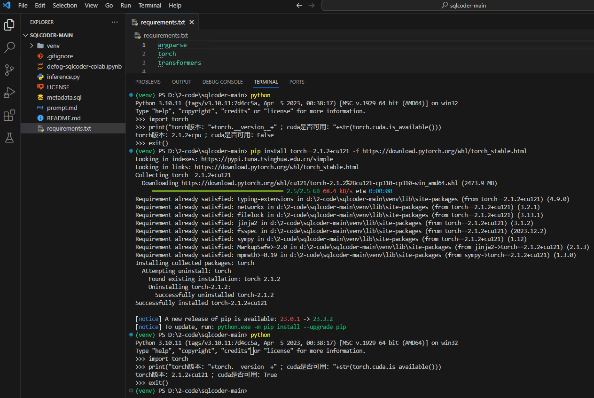

官网：GitHub - defog-ai/sqlcoder: SoTA LLM for converting natural language questions to SQL queries
参考：大模型应用实践:「智能问数应用」SQL Coder 构建大模型数据分析助手 - 百度智能云千帆社区
这次的测试环境不是我的老朋友了，是公司的一台机器（ Windows 10 22H2 19045 + i5-6600K CPU + 16GB 内存 + RTX 3060 12GB ）
这里测试的模型是：
项目地址：GitHub - defog-ai/sqlcoder: SoTA LLM for converting natural language questions to SQL queries
代码是“2024-01-02”在Github下载的，这里将代码放到了这里：
# 创建虚拟环境
python -m venv venv
# 激活虚拟环境
.\venv\scripts\activate
# 退出虚拟环境
deactivate
# 安装依赖（添加到这里，使用的时候方便一些）
pip install -r requirements.txt
# 检查 torch
python
import torch
print("torch版本："+torch.__version__+" ；cuda是否可用："+str(torch.cuda.is_available()))
# 安装 GPU版本 torch 下面两个都可以
pip install torch==2.1.2+cu121 -f https://download.pytorch.org/whl/torch_stable.html
pip install torch --extra-index-url https://download.pytorch.org/whl/cu121

# 为了测试更简单，这里将模型权重代码写死了
def get_tokenizer_model(model_name):
model_path = "D:\\0-llm\\defog\\sqlcoder-7b"
tokenizer = AutoTokenizer.from_pretrained(model_path)
model = AutoModelForCausalLM.from_pretrained(
model_path,
trust_remote_code=True,
torch_dtype=torch.float16,
device_map="auto",
use_cache=True,
)
return tokenizer, model
数据库（例如：MySQL）各个表的结构以及表之间的关系，使用
CREATE TABLE `task` (
`id` bigint(20) NOT NULL, -- Unique ID for each Task
`title` varchar(500) COLLATE utf8mb4_unicode_ci DEFAULT NULL, -- Task Title
`createdate` datetime DEFAULT NULL, -- Date of the Task Created
`createuser` bigint(20) DEFAULT NULL, -- Creator of the Task
`remark` varchar(1024) COLLATE utf8mb4_unicode_ci DEFAULT NULL, -- Remark of the Task
PRIMARY KEY (`id`)
) ENGINE=InnoDB DEFAULT CHARSET=utf8mb4 COLLATE=utf8mb4_unicode_ci;
说明：如果这个文件不修改，打印的结果中没有回答的SQL语句，参照开头百度的教程修改之后就没问题了，文件内容如下：
### Task
Generate a SQL query to answer the following question:
`{user_question}`
### Database Schema
This query will run on a MySQL database whose schema is represented in this string:
{table_metadata_string}
### SQL
Given the database schema, here is the SQL query that answers `{user_question}`:
```sql
按照文章中的顺序到这里，直接提问，会提示缺少依赖，请安装：
python inference.py -q "Count the number of Task."
下面是未修改
下面是修改
python inference.py -q "Count the number of task created each month and sort the results in ascending order by month."
# 回答如下：
SELECT date_trunc('month', created_at) AS MONTH, COUNT(*) AS task_count FROM task GROUP BY MONTH ORDER BY MONTH ASC;
# 需要稍微修改一下：
SELECT date_format(createdate, '%Y-%m') AS MONTH, COUNT(*) AS task_count FROM task GROUP BY MONTH ORDER BY MONTH ASC;
我去，这次生成的语句有两处问题：mysql不支持 date_trunc 函数（提示词中已经指明是 mysql）；表结构中没有“created_at”字段，是“createdate”。还有个问题就是之前研究他的时候，用的库表是项目中正式的，当时测试的时候“createdate”是没有问题的，这里为了写这篇笔记改了一下表名、修改字段名、删了几个字段等……这有点不稳定啊
在官方示例的基础上测试中文支持情况，在项目根目录下添加
这里在上面修改的基础上又修改了下面的代码：
def generate_prompt(question, prompt_file="zh/prompt.md", metadata_file="zh/metadata.sql"):
with open(prompt_file, "r",encoding="utf-8") as f:
prompt = f.read()
with open(metadata_file, "r",encoding="utf-8") as f:
table_metadata_string = f.read()
prompt = prompt.format(
user_question=question, table_metadata_string=table_metadata_string
)
return prompt
# 结构和上面的相同，只是修改成中文注释
CREATE TABLE `task` (
`id` bigint(20) NOT NULL, -- 每个任务的唯一ID
`title` varchar(500) COLLATE utf8mb4_unicode_ci DEFAULT NULL, -- 任务标题
`createdate` datetime DEFAULT NULL, -- 任务的创建日期
`createuser` bigint(20) DEFAULT NULL, -- 任务的创建人
`remark` varchar(1024) COLLATE utf8mb4_unicode_ci DEFAULT NULL, -- 任务的备注
PRIMARY KEY (`id`)
) ENGINE=InnoDB DEFAULT CHARSET=utf8mb4 COLLATE=utf8mb4_unicode_ci;
### 任务
生成一个SQL查询以回答以下问题：
`{user_question}`
### 数据库模式
此查询将在一个MySQL数据库上运行，该数据库的模式在以下字符串中表示：
{table_metadata_string}
### SQL
根据数据库模式，以下是回答 `{user_question}` 的SQL查询：
```sql
还是上面的几个问题
python zh/inference.py -q "统计一下任务的数量"
python zh/inference.py -q "统计每个月创建的任务的数量，并且对结果按月份升序排序"
SELECT date_format(createdate, '%Y-%m') AS MONTH, COUNT(*) AS task_count FROM task GROUP BY MONTH ORDER BY MONTH ASC;
这简直就是惊喜啊，目前测试结果来看，中文prompt要比英文prompt效果好